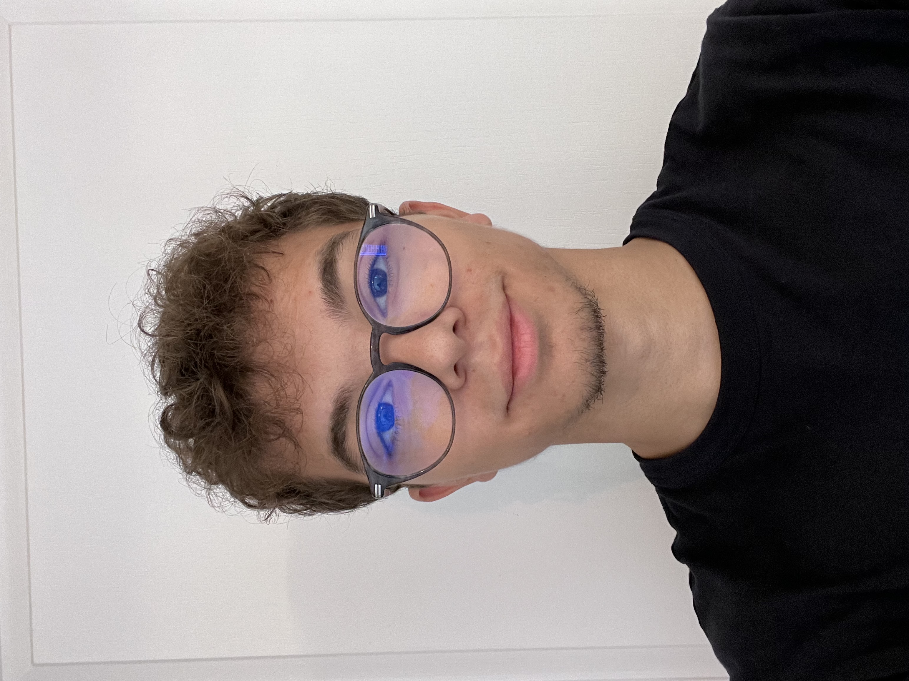
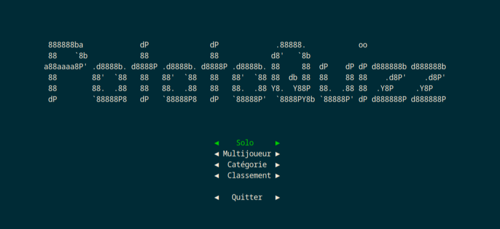
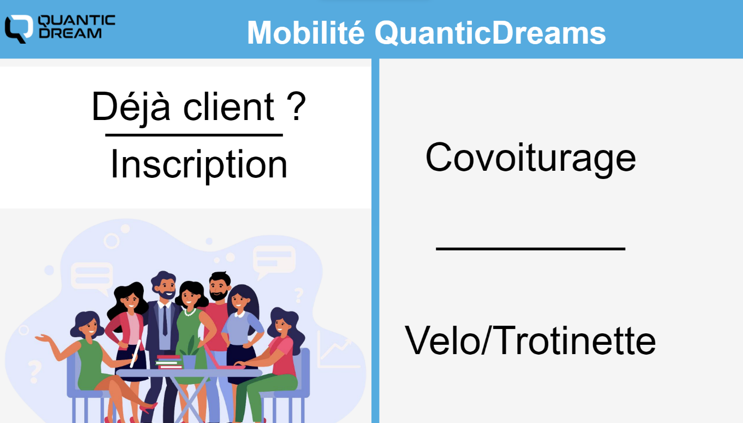
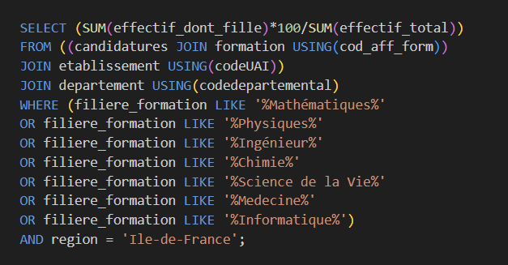
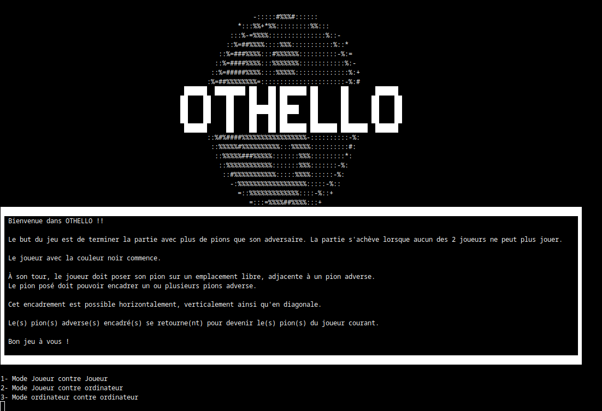
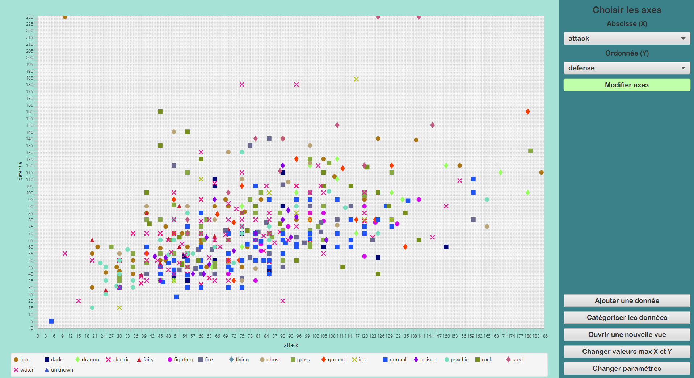
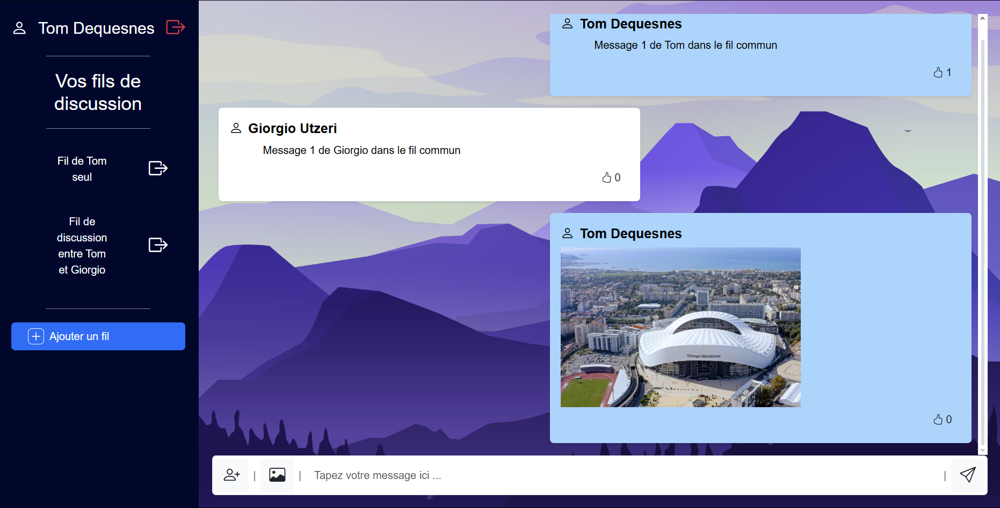

À propos de moi & Positionnement
Je m'appelle Tom Dequesnes, je suis diplômé d'un BUT Informatique à l'Université de Lille. Je suis actuellement à la recherche d'un premier contrat en CDI en tant que Développeur backend ou Développeur fullstack.
Passionné par la logique et la résolution de problèmes complexes, j'ai développé une solide expertise technique et professionnelle lors de mon alternance au sein d'E-Mothep.
Cette expérience professionnelle m'a permis d'acquérir une solide pratique du développement d'applications web, et de travailler en équipe sur un projet d'envergure.
Motivé et immédiatement disponible, je souhaite mettre ces savoir-faire au service de projets innovants.

Expérience en Alternance
Développeur backend (Alternance) — E-Mothep
E-Mothep est une société de conseil et d'intégration de solutions, spécialisée dans le développement d'applications, l'architecture orientée services (SOA) et l'intégration de progiciels.
Au sein de l'équipe technique, ma mission principale est de participer activement aux évolutions du logiciel QualiopSys. J'interviens exclusivement sur la partie backend de l'application à travers un workflow professionnel structuré par des tickets GitHub assignés par mon Tech Lead Back.
Compétences
Hard Skills (Techniques)
- Spring Boot Utilisé quotidiennement chez E-Mothep pour le logiciel QualiopSys. Maîtrise des architectures REST, de l'injection de dépendances et de la logique métier.
- Tests Unitaires & Mockito Mise en place de bonnes pratiques de validation de code. Isolation des composants et couverture de tests systématique avant livraison.
- SQL & Scripts de bases de données Modifications de schémas relationnels, requêtage optimisé et scripts de migration de données.
- Swagger & OpenAPI Conception, mise à jour et documentation rigoureuse des endpoints API.
- JavaScript / TypeScript (VueJS, React) Compétences acquises en formation de BUT, prêtes à être mobilisées dans un contexte fullstack.
Soft Skills (Comportementales)
-
Curiosité & Apprentissage continu
Une grande appétence pour la découverte. Face à l'inconnu technique, je m'auto-forme activement pour assimiler rapidement les notions et outils manquants.
-
Vulgarisation & Communication
Capacité à traduire des problématiques logicielles complexes en concepts simples et accessibles pour des profils non informaticiens (Cheffe de projet).
-
Rigueur & Anticipation
Lors de l'assignation d'un ticket, je cartographie mentalement l'ensemble des cas d'usage et scénarios d'erreurs possibles en amont du code pour devancer les bugs.
-
Réception des feedbacks constructifs
Mes Pull Requests font l'objet d'échanges poussés avec le Tech Lead. J'utilise chaque retour de code review comme une opportunité d'apprentissage.
Formation
BUT Informatique (3ème année)
IUT de Villeneuve d'Ascq. Le BUT Informatique était mon principal objectif car elle offre l'opportunité d'explorer diverses spécialités comme le développement informatique ou encore le réseau. J'apprécie particulièrement l'aspect pratique de cette formation.
BAC STI2D (Spécialité SIN)
Obtenu en 2023 avec mention Assez Bien au Lycée Pablo Neruda (Dieppe). J'ai choisi cette filière car elle me permettait de me diriger plus précisément dans l'informatique et dans les systèmes numériques.
Projets académiques

PotatoQuiz
Jeu ludo pédagogique développé en Java en binôme, basé sur un quiz pour les jeunes avec un système de points et de classement pour motiver les jeunes à s'améliorer.
Lien du projet
Site de covoiturage
Site développé en HTML et en CSS pour l'entreprise "Quantic Dreams" pour faciliter les trajets des employés. Proposant différents services comme le covoiturage ou des locations de vélos.
Lien du projet
Base de données Parcoursup
Création d'une base de données contenant les informations de Parcoursup de l'année 2023. Importations, ventilations et exportations des données pour faire différents calculs.
Lien du projet
Création d'un jeu de plateau
Création d'un jeu de plateau stratégique inspiré du célèbre jeu Othello. Développé en Java en groupe utilisant la méthodologie agile. Avec un temps imparti de 4 jours.
Lien du projet
Application-Classification
Création d'une application de classification de données grâce à l'algorithme KNN en les affichant en nuages de points. Ce projet a été développé en trinôme en Java et JavaFX avec une architecture MVC.
Lien du projet
LilleConnect
Création d'une application WEB de messagerie inspirée de WhatsApp, développé en JEE avec une architecture MVC. Cette application permet aux utilisateurs de créer des fils de discussions pour échanger des messages et images. L'application intègre également une API REST. Ce projet a été fait en binôme.
Lien du projetPassions & soft skills associés
L'informatique
L'informatique me passionne pour sa logique et la résolution de problèmes. Explorer de nouvelles technologies m'aide à développer ma créativité et ma capacité d'analyse.
Le speedcubing
Un hobby qui me permet de développer ma vitesse et ma précision mais également de gérer la pression en particulier lors des compétitions.
Ma page officielle WCA
Le sport
Le sport pour moi est une manière de rester en forme, de me vider l'esprit et il me permet aussi de développer des qualités essentielles comme la discipline et la persévérance.
Jeux vidéo & Esport
Le jeu en équipe développe mes réflexes de communication instantanée, de stratégie collective et d'esprit d'équipe.
Analyse réflexive : conscience de soi
Cette longue immersion chez E-Mothep m'a offert l'opportunité de mettre mes connaissances théoriques en pratique dans un contexte réel. Cette prise de recul met en lumière mon fonctionnement personnel ainsi que mes axes d'évolution.
Mes points forts
- Curiosité : Ma volonbté d'apprendre de nouvelles connaissances me pousse à creuser de manière autonome chaque zone d'ombre technique. Lorsque je découvrer un outil ou une notion que je ne connais pas, je me lance en mode recherche afin de le comprendre.
- Anticipation et vulgarisation : Je sais schématiser mes blocages ou l'avancement de mes tâches pour des collaborateurs non techniques. De plus, avant d'écrire la moindre ligne de code, je m'efforce de balayer mentalement l'ensemble des cas limites d'un ticket pour concevoir un algorithme robuste.
Mes axes de progression
- Lisibilité et partage du code (Clean Code) : Quand je développe, j'ai parfois tendance à me focaliser sur la résolution purement logique du problème, en oubliant que d'autres collaborateurs reliront mon code. Je travaille activement à rendre mon code plus compréhensible et mieux structuré.
- Vitesse d'assimilation initiale : J'ai conscience qu'il me faut souvent des explications très détaillées et un temps d'apprentissage pour comprendre pleinement un nouveau besoin ou un système complexe du premier coup. J'apprends à gérer ce rythme en posant un grand nombre de questions ciblées dès la phase de cadrage pour valider ma compréhension.